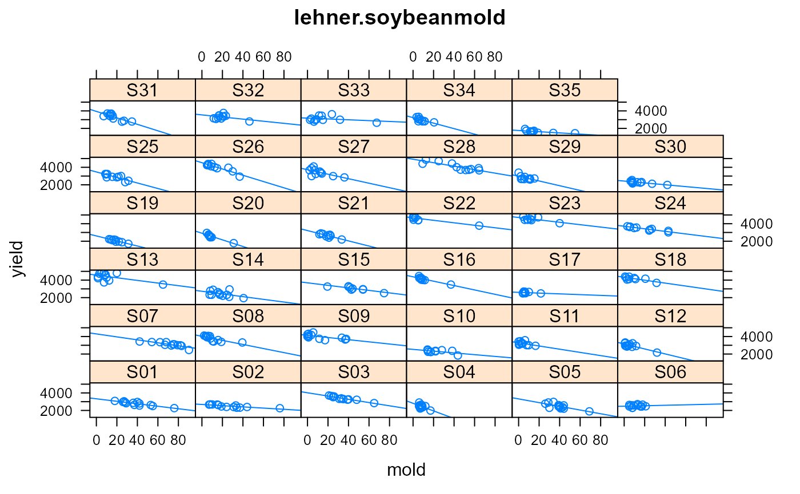
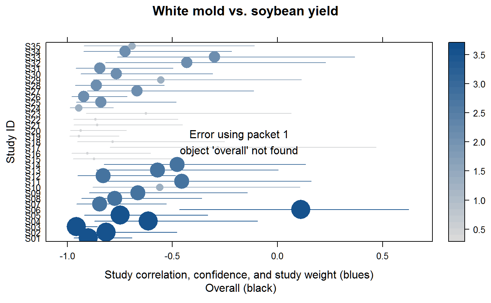

lehner.soybeanmold.RdYield, white mold, and sclerotia for soybeans in Brazil
data("lehner.soybeanmold")
A data frame with 382 observations on the following 9 variables.
studystudy number
yearyear of harvest
loclocation name
elevelevation
regionregion
trttreatment number
yieldcrop yield, kg/ha
moldwhite mold incidence, percent
sclerotiaweight of sclerotia g/ha
Data are the mean of 4 reps.
Original source (Portuguese) https://ainfo.cnptia.embrapa.br/digital/bitstream/item/101371/1/Ensaios-cooperativos-de-controle-quimico-de-mofo-branco-na-cultura-da-soja-safras-2009-a-2012.pdf
Data included here via GPL3 license.
Lehner, M. S., Pethybridge, S. J., Meyer, M. C., & Del Ponte, E. M. (2016). Meta-analytic modelling of the incidence-yield and incidence-sclerotial production relationships in soybean white mould epidemics. Plant Pathology. doi:10.1111/ppa.12590
Full commented code and analysis https://emdelponte.github.io/paper-white-mold-meta-analysis/
# \dontrun{ library(agridat) data(lehner.soybeanmold) dat <- lehner.soybeanmold if(0){ op <- par(mfrow=c(2,2)) hist(dat$mold, main="White mold incidence") hist(dat$yield, main="Yield") hist(dat$sclerotia, main="Sclerotia weight") par(op) } libs(lattice) xyplot(yield ~ mold|study, dat, type=c('p','r'), main="lehner.soybeanmold")# xyplot(sclerotia ~ mold|study, dat, type=c('p','r')) # meta-analysis. Could use metafor package to construct the forest plot, # but latticeExtra is easy; ggplot is slow/clumsy libs(latticeExtra, metafor)#> #>#> #>#> #> #>#> #> #>#> #> #># calculate correlation & confidence for each loc cors <- split(dat, dat$study) cors <- sapply(cors, FUN=function(X){ res <- cor.test(X$yield, X$mold) c(res$estimate, res$parameter[1], conf.low=res$conf.int[1], conf.high=res$conf.int[2]) }) cors <- as.data.frame(t(as.matrix(cors))) cors$study <- rownames(cors) # Fisher Z transform cors <- transform(cors, ri = cor) cors <- transform(cors, ni = df + 2) cors <- transform(cors, yi = 1/2 * log((1 + ri)/(1 - ri)), vi = 1/(ni - 3)) # Overall correlation across studies overall <- rma.uni(yi, vi, method="ML", data=cors) # metafor package # back transform overall <- predict(overall, transf=transf.ztor) # weight and size for forest plot wi <- 1/sqrt(cors$vi) size <- 0.5 + 3.0 * (wi - min(wi))/(max(wi) - min(wi)) # now the forest plot # must use latticeExtra::layer in case ggplot2 is also loaded segplot(factor(study) ~ conf.low+conf.high, data=cors, draw.bands=FALSE, level=size, centers=ri, cex=size, col.regions=colorRampPalette(c("gray85", "dodgerblue4")), main="White mold vs. soybean yield", xlab=paste("Study correlation, confidence, and study weight (blues)\n", "Overall (black)"), ylab="Study ID") + latticeExtra::layer(panel.abline(v=overall$pred, lwd=2)) + latticeExtra::layer(panel.abline(v=c(overall$cr.lb, overall$cr.ub), lty=2, col="gray"))# Meta-analyses are typically used when the original data is not available. # Since the original data is available, a mixed model is probably better. libs(lme4) m1 <- lmer(yield ~ mold # overall slope + (1+mold |study), # random intercept & slope per study data=dat)#> Warning: Model failed to converge with max|grad| = 0.00587194 (tol = 0.002, component 1)#> Linear mixed model fit by REML ['lmerMod'] #> Formula: yield ~ mold + (1 + mold | study) #> Data: dat #> #> REML criterion at convergence: 5293.1 #> #> Scaled residuals: #> Min 1Q Median 3Q Max #> -3.7268 -0.6009 -0.0259 0.5045 3.2526 #> #> Random effects: #> Groups Name Variance Std.Dev. Corr #> study (Intercept) 614294.78 783.770 #> mold 40.38 6.354 -0.30 #> Residual 36900.07 192.094 #> Number of obs: 382, groups: study, 35 #> #> Fixed effects: #> Estimate Std. Error t value #> (Intercept) 3456.609 134.241 25.75 #> mold -17.318 1.488 -11.64 #> #> Correlation of Fixed Effects: #> (Intr) #> mold -0.303 #> convergence code: 0 #> Model failed to converge with max|grad| = 0.00587194 (tol = 0.002, component 1) #># }